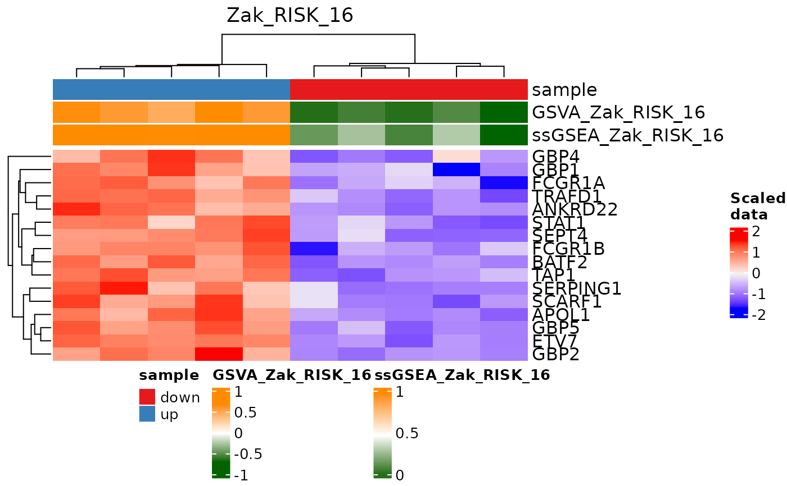

Plot a heatmap of a single signature score with individual gene expression levels.
Source:R/plot.R
signatureGeneHeatmap.RdThis function takes the profiled gene expression data for a single signature and creates a heatmap based on the expression scores.
Usage
signatureGeneHeatmap(
inputData,
useAssay,
sigGenes,
name = "Signature",
signatureColNames = NULL,
annotationColNames = NULL,
scale = TRUE,
showColumnNames = TRUE,
showRowNames = TRUE,
colList = list(),
colorSets = c("Set1", "Set2", "Set3", "Pastel1", "Pastel2", "Accent", "Dark2",
"Paired"),
choose_color = c("blue", "gray95", "red"),
column_order = NULL,
...
)Arguments
- inputData
a
SummarizedExperimentobject containing the profiled signature data and annotation data as columns in thecolData. Required.- useAssay
a character string specifying the assay to use for the gene expression data. Required.
- sigGenes
a vector identifying the genes in the signature to use in the heatmap. For inbuilt signatures, you can use
TBsignatures(e.g.,TBsignatures[["ACS_COR"]]). Required.- name
a character string with the plot title of the heatmap. The default is
"Signatures".- signatureColNames
a vector of the column names in the
colDatathat contain the signature data. Required.- annotationColNames
a vector of the column names in the
colDatathat contain the annotation data. IfNULL, no annotation bar besides those of the scoring algorithms will be drawn on the heatmap. The default isNULL.- scale
logical. Setting
scale = TRUEscales the signature data. The default isTRUE.- showColumnNames
logical. Setting
showColumnNames = TRUEwill show the column names (i.e. sample names) on the heatmap. The default isTRUE.- showRowNames
logical. Setting
showColumnNames = TRUEwill show the row names (i.e. signature names) on the heatmap. The default isTRUE.- colList
a named
listof named vectors specifying custom color information to pass toComplexHeatmap::Heatmap(). The list should have as many elements as there are annotation columns and gene signatures (i.e.sigGenes), and each element name should correspond exactly with the name of each annotation column/signature. The colors in the vector elements should be named according to the levels of the factor in that column's annotation data if the annotation is discrete, or it should be produced withcirclize::colorRamp2if the annotation/gene is continuous. By default,ColorBrewercolor sets will be used. See the the parametercolorSetsfor additional details.- colorSets
a vector of names listing the color sets in the order that they should be used in creating the heatmap. By default, this function will use the color sets in the order listed in
Usagefor annotation information. You may replace the default with the same collection of sets in order that you want to use them, or provide custom color sets with thecolListparameter.- choose_color
a vector of color names to be interpolated for the heatmap gradient, or a
colorRampfunction produced bycirclize::colorRamp2. The default isc("blue", "gray95", "red").- column_order
a vector of character strings indicating the order in which to manually arrange the heatmap columns. Default is
NULL, such that column order is automatically determined via clustering.- ...
Additional arguments to be passed to
ComplexHeatmap::Heatmap().
Examples
library(SummarizedExperiment)
# Generate some artificial data that shows a difference in Zak_RISK_16
mat_testdata <- rbind(matrix(c(rnorm(80), rnorm(80) + 5), 16, 10,
dimnames = list(TBsignatures$Zak_RISK_16,
paste0("sample", seq_len(10)))),
matrix(rnorm(1000), 100, 10,
dimnames = list(paste0("gene", seq_len(100)),
paste0("sample", seq_len(10)))))
# Create a SummarizedExperiment object that contains the data
testdataSE <- SummarizedExperiment(assays = SimpleList(data = mat_testdata),
colData = DataFrame(sample =
c(rep("down", 5),
rep("up", 5))))
# Run profiler using GSVA and ssGSEA on Zak_RISK_16
res <- runTBsigProfiler(testdataSE, useAssay = "data",
signatures = TBsignatures["Zak_RISK_16"],
algorithm = c("GSVA", "ssGSEA"), parallel.sz = 1,
combineSigAndAlgorithm = TRUE)
#> Parameter update_genes is TRUE. Gene names will be updated.
#> Running GSVA
#> Estimating GSVA scores for 1 gene sets.
#> Estimating ECDFs with Gaussian kernels
#>
|
| | 0%
|
|======================================================================| 100%
#>
#> Running ssGSEA
#> Estimating ssGSEA scores for 1 gene sets.
#>
|
| | 0%
|
|======= | 10%
|
|============== | 20%
|
|===================== | 30%
|
|============================ | 40%
|
|=================================== | 50%
|
|========================================== | 60%
|
|================================================= | 70%
|
|======================================================== | 80%
|
|=============================================================== | 90%
|
|======================================================================| 100%
#>
# Plot a heatmap of signature genes and pathway predictions
signatureGeneHeatmap(res, useAssay = "data",
sigGenes = TBsignatures[["Zak_RISK_16"]],
signatureColNames = c("GSVA_Zak_RISK_16",
"ssGSEA_Zak_RISK_16"),
annotationColNames = c("sample"), showColumnNames = FALSE,
name = "Zak_RISK_16")
